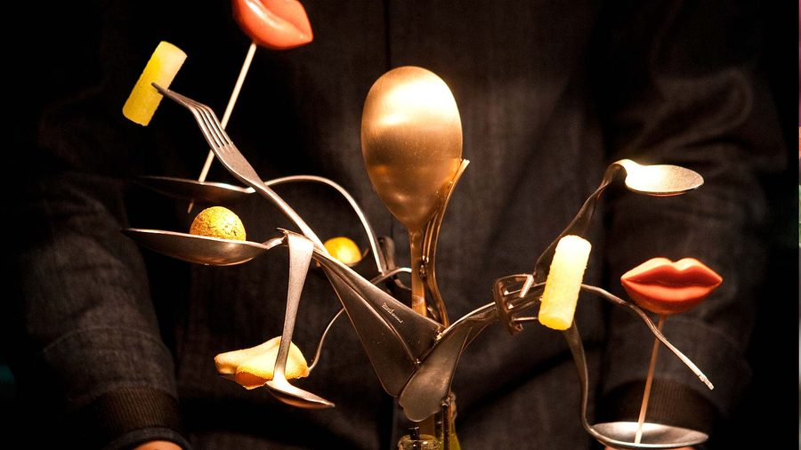
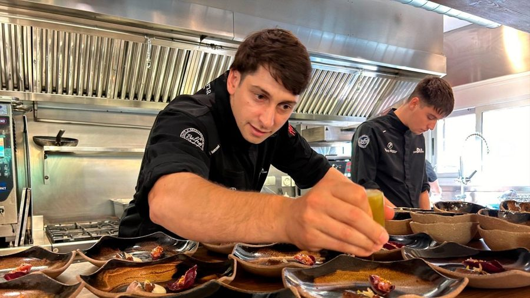
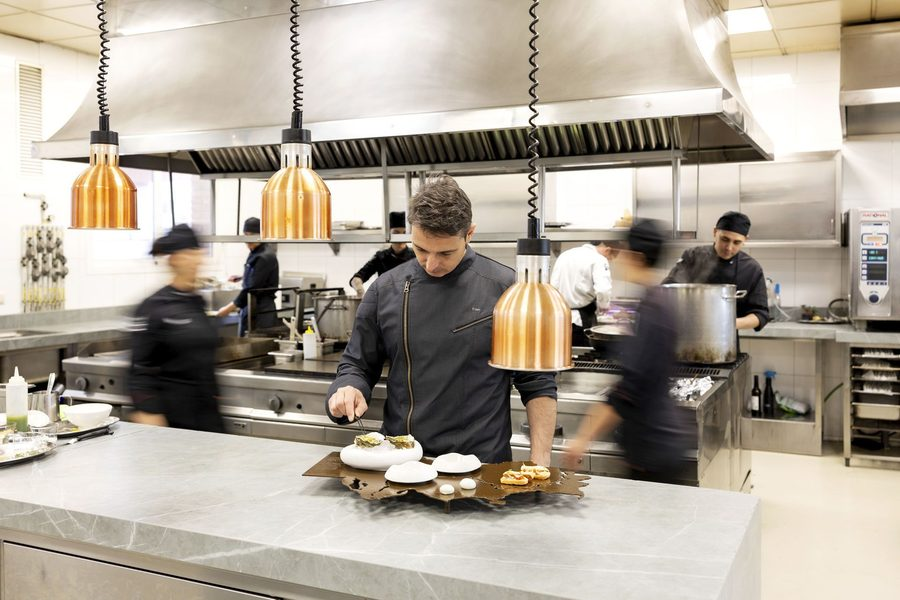
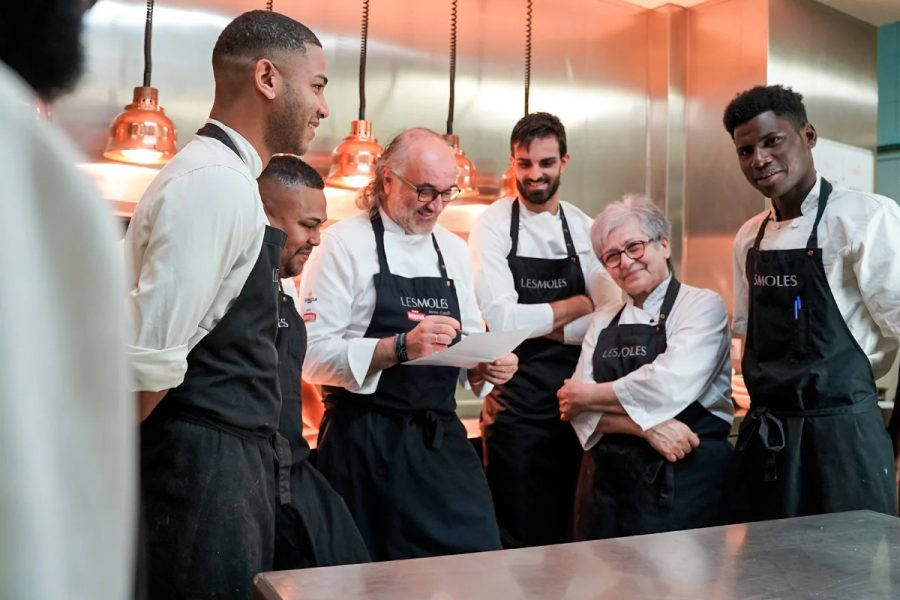
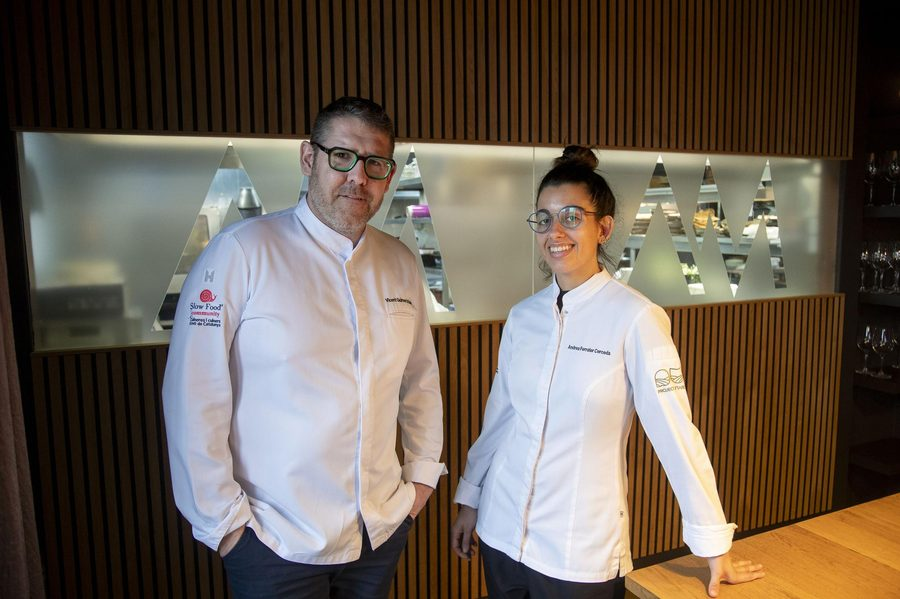
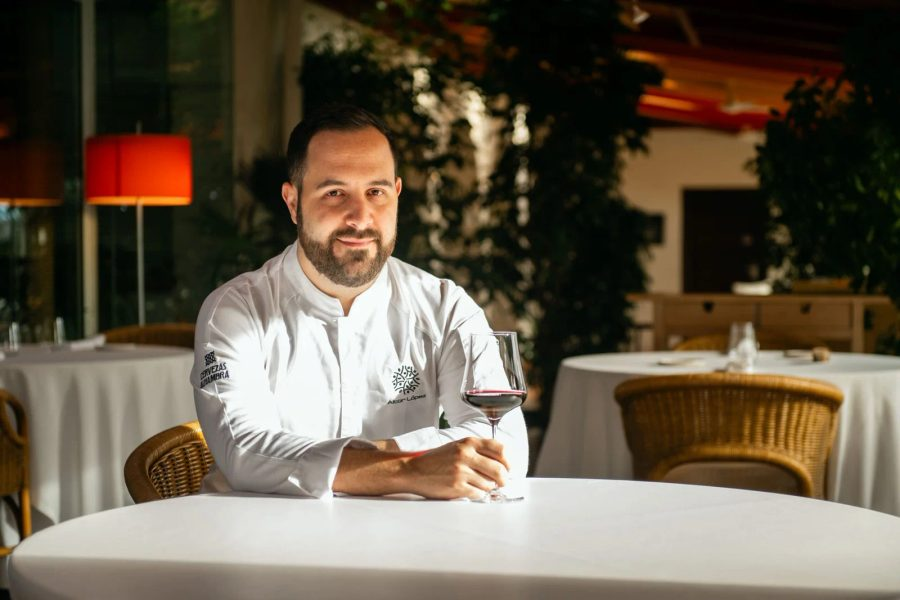
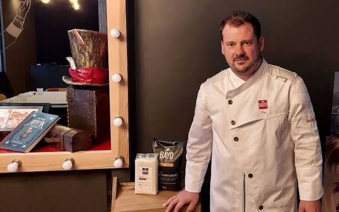
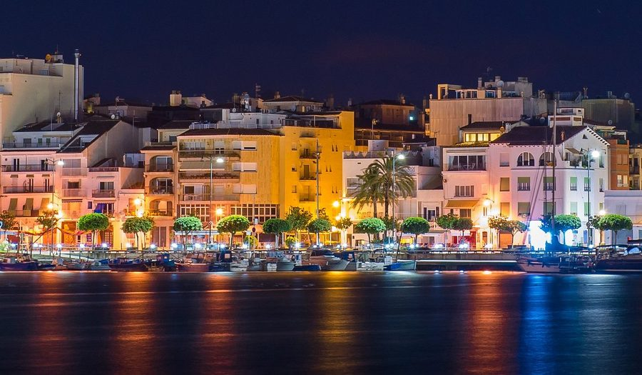
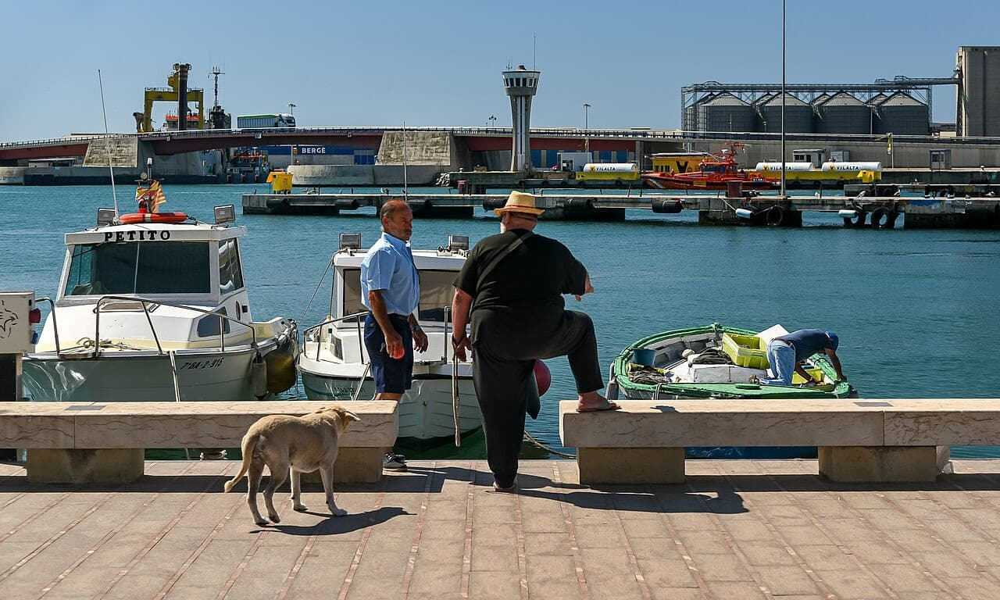

Dónde están las ocho
La guía Michelin 2026 reconoce ocho restaurantes con una estrella en la provincia. Puestos sobre el mapa, el reparto dice más que la lista: dos están en Cambrils, dos en Ulldecona, y el resto se reparte entre Salou, Cornudella de Montsant, Xerta y Alcanar. En la ciudad de Tarragona, ninguna.
Las ocho, una por una · Guía 2026
Can Bosch (Cambrils), con estrella desde 1984, la decana. · Rincón de Diego (Cambrils), de Diego Campos, desde 2005. · Deliranto (Salou), de Pep Moreno, la primera estrella de la historia de Salou. · Quatre Molins (Cornudella de Montsant), del chef Rafel Muria, desde la guía de 2021. · Villa Retiro (Xerta), de Fran López. · Les Moles (Ulldecona), de Jeroni Castell. · L'Antic Molí (Ulldecona), de Vicent Guimerà, que obtuvo la estrella verde por sostenibilidad, una distinción que Michelin ha dejado de publicar en 2026. · Citrus del Tancat (Alcanar), de Aitor López, que la consiguió en menos de cuatro años desde que abrió.






Deliranto cierra el 31 de octubre y se lleva la estrella a Andorra
La noticia de este mes es una resta. Deliranto, el restaurante de Pep Moreno que dio a Salou su primera estrella Michelin, hace el último servicio en la calle Llevant el 31 de octubre. El proyecto reabrirá en el Grand Plaza Hotel & Wellness de Andorra la Vella, con previsión para la segunda mitad de 2027, y Moreno asumirá además la dirección gastronómica del grupo hotelero.
El cocinero ha explicado que quería quedarse en el Camp de Tarragona y no encontró inversor, según recogió el Diari de Tarragona. Ha hablado también de motivos personales, y ha reconocido que en Salou tenía clientes, visibilidad y estabilidad. Sea como sea, el resultado para el territorio es el mismo: Salou pierde la única estrella que ha tenido nunca, y la provincia se queda con siete.

Dos pueblos de pescadores y una capital sin estrella
Que Cambrils y Ulldecona concentren cuatro de las ocho no es casualidad: son pueblos con cocina propia y de producto, donde la alta cocina creció desde dentro y no desde la recepción de un hotel. Y que las Terres de l'Ebre sumen cuatro —Xerta, Alcanar y las dos de Ulldecona— confirma algo que aquí sabemos: el sur de la provincia cocina muy en serio y se lo cuenta poco.
Y queda la pregunta incómoda: la ciudad de Tarragona no tiene ninguna estrella. Tiene producto —la lonja del Serrallo a diez minutos—, tiene historia y tiene cocineros. Lo que no ha tenido todavía es una casa que convierta todo eso en el tipo de propuesta que la guía reconoce.


La lista que casi nadie mira
Además de las estrellas, la guía 2026 incluye dieciséis restaurantes recomendados en el territorio. No es un premio de consolación: ese distintivo valora calidad de producto, regularidad en la cocina y propuesta con personalidad. Para quien sale a comer por aquí, esa lista suele dar más alegrías por euro que la otra.
Los dieciséis, por municipios · Guía 2026
Reus: L'Alkimista, Ferran Cerro y VÍTRIC Taverna Gastronòmica. · Cambrils: Miramar, Bresca y Hiu. · Tarragona: El Terrat y Barquet. · Salou: La Morera de Pablo & Ester. · L'Ametlla de Mar: La Llotja. · Altafulla: Gaudium. · Riudoms: Celler Joan Pàmies. · Solivella: Cal Travé. · Arnes: L'Hort. · Torroja del Priorat: Vinum. · Alcanar: Els Jardins del Tancat.
El reparto vuelve a decir cosas. Reus y Cambrils encabezan con tres cada uno. Y la ciudad de Tarragona, que no tiene ninguna estrella, aquí sí aparece: con El Terrat y Barquet. No es lo mismo, pero desmiente la lectura fácil de que la capital no cocina.
Y en uno de ellos ya hemos estado
El Terrat, de Moha Quach, fue la tercera visita del Recorrido Gourmet 2026, en mayo, frente al puerto. Lo contamos en su crónica. Que la guía lo recomiende no nos sorprende: ya lo habíamos elegido nosotros, y sin consultar ninguna lista.
Nuestro recorrido no va a estrellas
Las ocho visitas anuales de la asociación no se eligen por guía, se eligen por criterio propio: por eso en el recorrido hay desde casas de mantel largo hasta cocinas de barrio. Una estrella es una información útil, no un veredicto. Dicho esto, saber dónde están y de quién son ayuda a entender el territorio, y este año ayuda también a entender lo que se nos va.
Fuentes consultadas: Guía Michelin España 2026, Diari de Tarragona, Diari Més, Canal 21 Ebre, La Ciutat, Patronat de Turisme de Salou. Imágenes: material de prensa y webs de los propios restaurantes (Can Bosch, Rincón de Diego, Quatre Molins, Villa Retiro, Les Moles, L'Antic Molí, Citrus del Tancat) y medios locales. El Serrallo, archivo propio.